Bedingte Formatierung
conditional-format
Origin unterstützt mehrere Hilfsmittel für die bedingte Formatierung, um Zellen im Arbeitsblatt farblich zu markieren.
Um den Dialog zu öffnen:
- Wählen Sie im Menü Arbeitsblatt: Bedingte Formatierung und wählen Sie das gewünschte Untermenü.
oder
- Markieren Sie die Zellen im Arbeitsblatt, klicken Sie dann mit der rechten Maustaste und wählen Sie Bedingte Formatierung. Wählen Sie das gewünschte Untermenü.
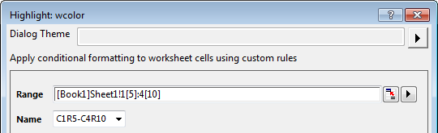
In den Dialogen dieser Hilfsmittel können Sie den Bereich der Zellen im Arbeitsblatt und den Namen für den ausgewählten Bereich festlegen.
Per Standard besteht der Name aus erster Zelle-letzter Zelle des Bereichs. Wenn der Bereich zum Beispiel von Spalte1 Zeile5 bis Spalte4 Zeile10 geht, lautet der Name C1R5-C4R10. Sie können den Namen auch durch Eingabe von Text definieren. Im gleichen Arbeitsblatt wird der Name des verwendeten bedingten Formats in diesem Auswahlfeld aufgeführt.
Hinweis: Wenn Sie für ein Arbeitsblatt ein bedingtes Format hinzugefügt haben, können diese Hilfsmittel dabei unterstützen, die Regel zu aktualisieren, aber dabei nicht den Datenbereich mit dem ursprünglichen Namen zu ändern. Wenn Sie nur den Bereich des bedingten Formats aktualisieren möchten, müssen Sie ihn unter Bedingtes Format verwalten bearbeiten.
Bedingtes Hervorheben
Markieren Sie die Zellen farbig, die den Bedingungseinstellungen im Dialog entsprechen.
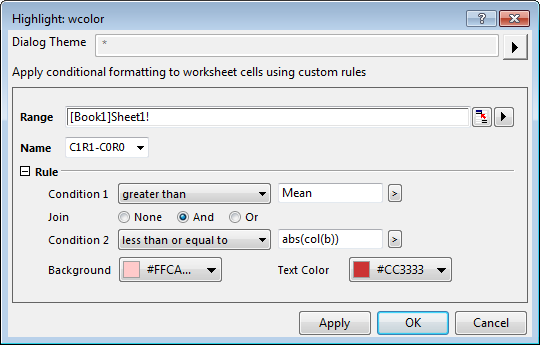
Regel
| Bedingung |
Wenn der Bereich (Spalten) Format = Numerisch
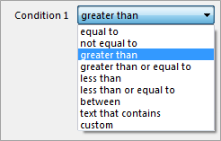
- Klicken Sie auf die dreieckige Schaltfläche, um das Ausklappmenü zu öffnen und den Statistikwert und die textbezogenen Funktionen abzurufen.
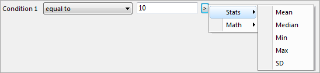
- Wenn Sie Benutzerdefiniert auswählen, wird das Bearbeitungsfeld Benutzerdefiniert gezeigt. Es wird zur Eingabe der Bedingungen verwendet. x stellt die Zellen im Bereich dar.
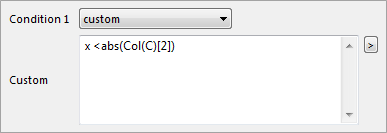
Wenn der Bereich (Spalten) Format = Datum / Zeit
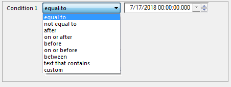
- Wählen Sie den Datenwert im Feld auf der rechten Seite.
|
| Zusammenfügen |
Der Standardstatus ist Kein, aber Sie können die Auswahlliste entweder auf Und oder auf Oder setzen und eine zweite Filterbedingung erstellen. |
| Hintergrund |
Legen Sie die Hintergrundfarbe für den Zellenwert fest, der mit den Bedingungen der Regel übereinstimmt. |
| Textfarbe |
Legen Sie die Textfarbe für den Zellenwert fest, der mit den Bedingungen der Regel übereinstimmt. |
Duplizierte Werte hervorheben
Verwenden Sie dieses Hilfsmittel, um die Zellen mit dupliziertem Wert farbig zu markieren.
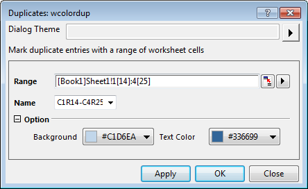
Option
| Hintergrund |
Legen Sie die Hintergrundfarbe für die Zellen mit dupliziertem Wert fest. |
| Textfarbe |
Legen Sie die Textfarbe für die Zellen mit dupliziertem Wert fest. |
Oben/Unten hervorheben
Markieren Sie die oberen und unteren N Werte in den ausgewählten Spalten farbig.
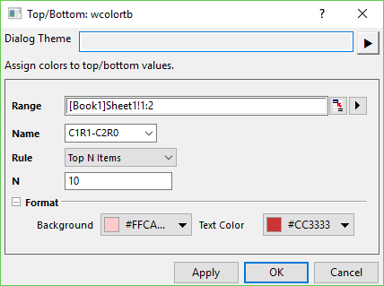
Regel
| Obere N Elemente |
Markieren Sie die oberen N Werte in den Bereichsspalten farbig. |
| Obere N% |
Markieren Sie die oberen N% Werte in den Bereichsspalten farbig. |
| Untere N Elemente |
Markieren Sie die unteren N Werte in den Bereichsspalten farbig. |
| Untere N% |
Markieren Sie die unteren N % Werte in den Bereichsspalten farbig. |
Min. und Max. hervorheben
Markieren Sie die Werte für Minimum und/oder Maximum in jeder ausgewählten Spalte/Zeile, unabhängig von den anderen Spalten bzw. Zeilen.
- Wählen Sie Arbeitsblatt: Bedingte Formatierung: Minimum/Maximum hervorheben: Zeilenweise/Spaltenweise, um die die Werte für Minimum und Maximum direkt in Zeilen-/Spaltenrichtung farbig zu markieren, ohne einen Dialog zu öffnen.
- Jedes gespeicherte Design wird unter Arbeitsblatt: Bedingte Formatierung: Minimum/Maximum hervorheben aufgeführt, einschließlich <Standard> und <zuletzt verwendet>. Sie können sie auswählen, um die Formatierung direkt anzuwenden.
- Wählen Sie Arbeitsblatt: Bedingte Formatierung: Minimum/Maximum hervorheben: Dialog öffnen, um den Dialog wcolorbycr zu öffnen und die Richtungs und Farbeinstellungen zu ändern.
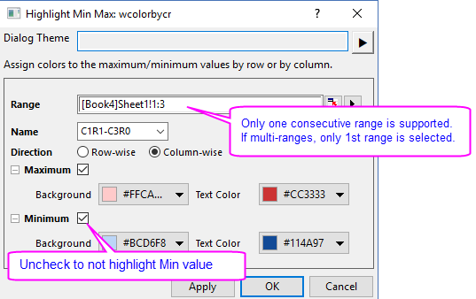
Bedingtes Pareto
Berechnen Sie alle Elemente im ausgewählten Bereich und ordnen Sie sie vom häufigsten bis zum seltensten wie im Pareto-Diagramm.
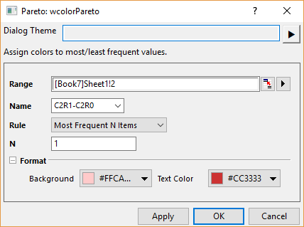
Regel
| Häufigste N Elemente |
Markieren Sie die oberen N Element der Zählung farbig. |
| Häufigste N% |
Markieren Sie die Elemente mit kumulativer Häufigkeit <=N% farbig. |
| Seltenste N Elemente |
Markieren Sie die unteren N Element der Zählung. |
| Seltenste N% |
Markieren Sie die Elemente mit kumulativer Häufigkeit >=(1-N%) farbig. |
Bedingte Ausreißer
Markieren Sie die Ausreißer des ausgewählten Bereichs wie beim Boxdiagramm.
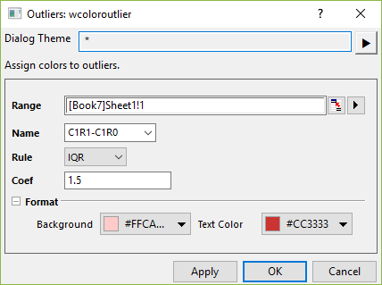
Regel
| IQR |
Identisch mit Whiskerbereich = Ausreißer im Boxdiagramm.
Wählen Sie oder geben Sie einen Wert n in das Auswahlfeld Koeff. ein, um den Whisker um einen Faktor von n zu erweitern.
Mit dem Standardwert des Koeffizienten von 1,5 wird die Whiskerlänge durch den am weitesten außen liegenden Datenpunkt definiert, der in die obere und untere innere Schranke fällt (ein Koeff. = 3 würde von dem am weitesten außen stehenden Punkt, der in den Bereich der oberen und unteren äußeren Schranke fällt, bestimmt werden).
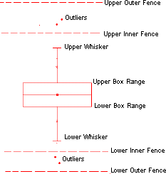 - Obere innere Schranke = 75. Perzentil + (1,5 * Interquartilbereich)
- Untere innere Schranke = 25. Perzentil + (1,5 * Interquartilbereich)
|
| StdAbw. |
Identisch mit Whiskerbereich = StdAbw im Boxdiagramm.
Wählen Sie oder geben Sie einen Wert n in das Auswahlfeld Koeff. ein, um den Whisker um einen Faktor von n zu erweitern.
|
Bedingte Heatmap
Verwenden Sie die Heatmap, um Zellen entsprechend der Ebeneneinstellung farbig zu markieren.
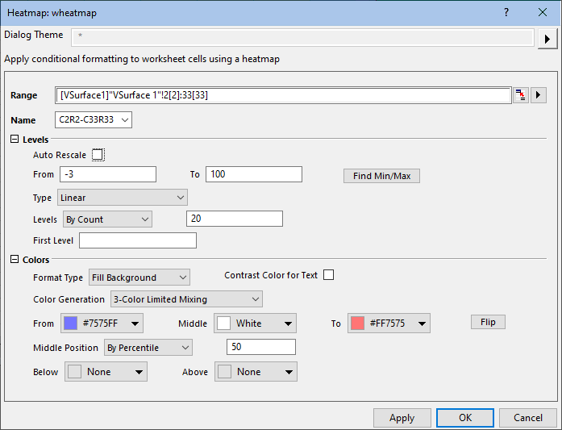
Ebene
| Automatisch neu skalieren |
Aktivieren Sie dieses Kontrollkästchen, um den Wert von Maximum und Minimum des Bereichs automatisch zu entdecken. Per Standard ist die Option aktiviert. |
| Von |
Dies ist nur verfügbar, wenn Automatisch neu skalieren deaktiviert ist. Verwenden Sie diese Option, um das Minimum festzulegen. |
| Bis |
Dies ist nur verfügbar, wenn Automatisch neu skalieren deaktiviert ist. Verwenden Sie diese Option, um das Maximum festzulegen. |
| Minimum/Maximum suchen |
Klicken Sie auf diese Schaltfläche, um den Wert für Maximum und Minimum basierend auf dem ausgewählten Datenbereich zu entdecken und die Werte von Bis und Von automatisch anzugeben. |
| Typ |
Wählen Sie einen Typ für die Ebenenskalierung. Einzelheiten zum Skalierungstyp finden Sie hier. |
| Ebenen |
- Legen Sie Ebenen nach Inkrement fest, das durch den Wert im Textfeld auf der rechten Seite angegeben wird.
- Legen Sie Ebenen nach Anzahl fest, die durch den Wert im Textfeld auf der rechten Seite angegeben wird.
|
| Erste Ebene |
Legen Sie den Wert der ersten Ebene fest. Hinweis: Dieser Wert sollte größer als oder gleich dem Standardwert der ersten Ebene sein. |
Farben
| Formattyp |
Verwenden Sie die Farbe zum Hintergrund füllen oder Text färben der Zellen im ausgewählten Bereich.
|
| Kontrastfarbe für Text |
Verwenden Sie gegen die Hintergrundfarbe der Zellen die Kontrastfarbe für den Text. |
| Farberzeugung |
- Wählen Sie diese Option, um eine Füllfarbe für die Ebene des Minimums (Von) und eine für die Ebene des Maximums (Bis) auszuwählen und die Ebenen zwischen diesen beiden Endpunkten mit einer linearen Mischung der beiden Farben zu füllen.
- Mischung mit 3 Farben festlegen
- Wählen Sie diese Option, um eine Füllfarbe für die Ebene des Minimums (Von), eine Füllfarbe für die mittlere Ebene (Mitte) und eine Füllfarbe für die Ebene des Maximums (Bis) auszuwählen und einen Zellenbereich mit einem graduellen Verlauf von drei Farben zu füllen.
- Farben zu Mischung hinzufügen
- Wählen Sie diese Option, damit Origin automatisch komplementäre Farben in die Mischung aufnimmt. Diese Option bietet Füllfarben, die eindeutiger sind als die der Beschränkten Mischung.
- Laden Sie die Palette und wenden Sie sie für die Farbfüllungen an. Klicken Sie auf die Schaltfläche Palette auswählen. Sie können eine Palette aus der standardmäßigen Inkrementliste oder aus den Paletten auswählen.
|
| Von |
Dies ist nur verfügbar, wenn Beschränkte Mischung, Mischung mit 3 Farben festlegen oder Farben zu Mischung hinzufügen ausgewählt ist. Verwenden Sie dies, um die Farbe für die Ebene des Minimums festzulegen. |
| Mitte |
Dies ist nur verfügbar, wenn Mischung mit 3 Farben festlegen ausgewählt ist. Verwenden Sie dies, um die Farbe für die mittlere Ebene festzulegen. |
| Bis |
Dies ist nur verfügbar, wenn Beschränkte Mischung, Mischung mit 3 Farben festlegen oder Farben zu Mischung hinzufügen ausgewählt ist. Verwenden Sie dies, um die Farbe für die Ebene des Maximums festzulegen. |
| Mittlere Position |
Wird verwendet, um die Werte verbunden mit der Mittleren Farbe in Beschränkte Mischung mit 3 Farben zu steuern:
- Wenn Nach Perzentil gewählt ist, geben Sie das Perzentil des Zellenwerts ein, das der mittleren Farbe entspricht.
- Wenn Nach Prozent gewählt ist, geben Sie die Prozent des Zellenwerts ein, die der mittleren Farbe entsprechen.
- Wenn Nach Wert gewählt ist, geben Sie einen Zellenwert ein, der der mittleren Farbe entsprechen soll.
|
| Palette |
Dies ist nur verfügbar, wenn Palette laden ausgewählt ist. Wählen Sie die standardmäßige Inkrementliste oder die Paletten. |
| Spiegeln |
Spiegeln Sie die Farbordnung für Von und Bis oder in der ausgewählten Palette. |
| Unterhalb |
Legen Sie eine Farbe fest. Sie wird für die Zelle verwendet, deren Wert unter dem Wert für Von liegt. |
| Oberhalb |
Legen Sie eine Farbe fest. Sie wird für die Zelle verwendet, deren Wert über dem Wert für Bis liegt. |
 |
Es kann sich als praktisch erweisen, die bedingte Heatmap zu zoomen oder zu schwenken:
- Um das Arbeitsblatt zu zoomen, drücken Sie die Strg-Taste und drehen Sie das Mausrad nach oben bzw. unten.
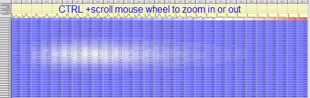
- Um das Arbeitsblatt zu schwenken, klicken Sie mit dem Mausrad (die meisten verfügen über diese Funktion) und führen Sie dann das kreisförmige 4-Punkt-Symbol des Mauszeigers, das in der Richtung angezeigt wird, in die Sie schwenken möchten. Drücken Sie zum Verlassen die ESC-Taste auf der Tastatur.
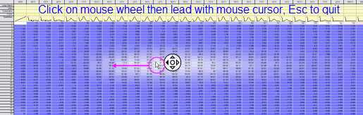
|
Bedingtes Format entfernen
Es gibt zwei Methoden, um das bedingte Format zu entfernen.
- Markieren Sie den Bereich, zu dem Sie das bedingte Format hinzugefügt haben, und wählen Sie Arbeitsblatt: Bedingte Formatierung: Format entfernen im Menü.
- ODER
- Aktivieren Sie das Arbeitsblatt mit dem bedingten Format. Wählen Sie im Menü Arbeitsblatt: Bedingte Formatierung: Bedingtes Format verwalten, um den Dialog Bedingtes Format verwalten zu öffnen. Wählen Sie die Zeile des bedingten Formats in der Liste und klicken Sie auf die Schaltfläche Entfernen, um das Formatelement zu löschen.
Bedingtes Format verwalten
Der Dialog Bedingtes Format verwalten listet alle bedingten Formate im aktiven Arbeitsblatt auf. Er wird verwendet, um das bedingte Format durch Bearbeiten, Neuordnen und Entfernen zu verwalten.
Um den Dialog zu öffnen: Arbeitsblatt: Bedingte Formatierung: Bedingtes Format verwalten.
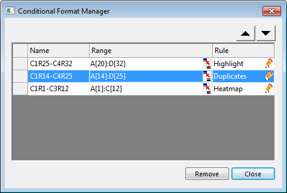
Bedingtes Format bearbeiten
Um die Farbe zu ändern:
Klicken Sie doppelt auf die Zelle des Namens für das bedingte Format, um es umzubenennen.
Um die Bereich zu ändern:
- Klicken Sie auf die Schaltfläche der Bereichsauswahl
 und wählen Sie den Bereich im Arbeitsblatt dann erneut.
und wählen Sie den Bereich im Arbeitsblatt dann erneut.
oder
- Klicken Sie doppelt auf die Zelle des Bereichs. Geben Sie dann einen neuen Bereich ein.
Um die Regel zu aktualisieren:
- Klicken Sie auf
 , um den entsprechenden Dialog des bedingten Formats erneut zu öffnen.
, um den entsprechenden Dialog des bedingten Formats erneut zu öffnen.
- Aktualisieren Sie die Regel oder die Optionen im Dialog.
Bedingtes Format neu ordnen
Wenn die Bereiche von zwei bedingten Formate sich überschneiden, wird das neu hinzugefügte Format oben in dieser Liste angezeigt. Und im sich überschneidenden Bereich des Arbeitsblatts wird das obere Format angewendet.
Um das bedingte Format neu zu ordnen:
- Wählen Sie das gewünschte bedingte Format in der Liste aus.
- Verwenden Sie die Schaltflächen
 oder , um das bedingte Format zu verschieben.
oder , um das bedingte Format zu verschieben.
oder
- Klicken Sie auf die leere Stelle links vom Namen des gewünschten bedingten Formats und halten Sie die Maustaste gedrückt.
- Ziehen Sie die Zeile des bedingten Formats nach oben oder unten.
Bedingtes Format entfernen
Wählen Sie die Zeile des bedingten Formats in der Liste und klicken Sie auf die Schaltfläche Entfernen, um das Formatelement zu löschen.